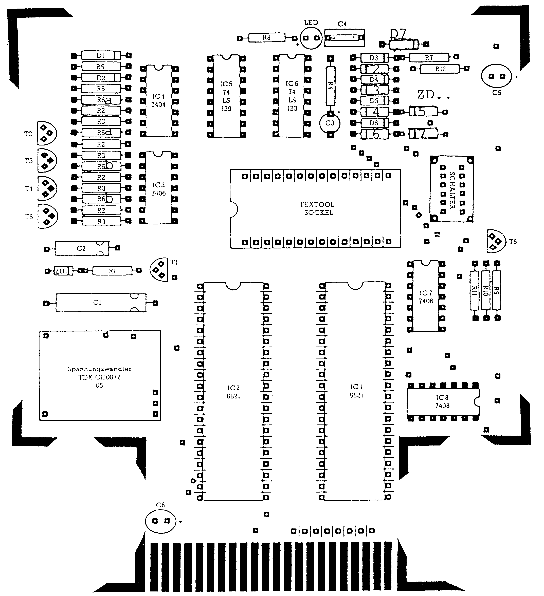

Tips und Tricks zum EPROMer
Zum EPROM-Brenner aus unseren Ausgaben 12/85 und 1/86 haben sich einige Fragen ergeben. Hier finden Sie, welche Probleme entstanden sind und wie Sie diese lösen können.
Beim 64’er EPROM-Brenner haben sich leider durch die kontinuierliche Weiterentwicklung Probleme ergeben. Wir bedauern, daß dadurch Schwierigkeiten beim Nachbau entstanden sind. Welche Korrekturen für eine einwandfreie Funktion des EPROM-Brenners notwendig sind, erfahren Sie hier.
- Wenn Sie die Platine mit Hilfe des abgedruckten Layouts (Ausgabe 1/86, Seite 149) selbst gefertigt haben, müssen Sie die Verbindung zwischen Pin 8 und 19 des Textool-Sockels beseitigen. Sie entsteht durch einen Kurzschluß neben Pin 1 bis Pin 4 bei IC 1.
- Im Bestückungsplan (Ausgabe 1/86, Seite 151) sind die Zehnerdioden ZD 2 bis ZD 7 verkehrt gepolt und die Diode D 7 fehlt. Deshalb haben wir einen neuen Bestückungsplan (Bild) abgedruckt. Dabei sind die vorher unter R 6 zusammengefaßten Widerstände aufgeteilt in R 6a und R 6b.
- In der Stückliste (Ausgabe 1/86, Seite 151) sind Änderungen bei R 6 und R 8 notwendig. Eine neue Stückliste (Tabelle) ist daher ebenfalls abgedruckt.
- In der Kaskadenschaltung (Ausgabe 12/85, Seite 44) fehlt der Kondensator zwischen den beiden mittleren Dioden in der oberen Leitung. Die Polung ist identisch mit allen anderen Kondensatoren.
- Nun kommen wir zum Schaltplan (Ausgabe 12/85, Seite 47). Vor den Zehnerdioden ZPD 24 (ZD 2 und ZD 3), ZPD 9,1 + ZPD 3,3 (ZD 4 bis ZD 7) sind jeweils Vorwiderstände (R 6) mit einem Wert von 63 Ohm eingezeichnet. Diese Widerstände müssen durch die neuen Widerstände R 6a und R 6b ersetzt werden. Die 43 Ohm-Widerstände sind vor die beiden ZPD 24 zu schalten, während die zwei weiteren gegen 430 Ohm-Widerstände ausgetauscht werden.

| Halbleiter | |
| IC 1/2 | 6821 |
| IC 3/7 | 7406 |
| IC 4 | 7404 |
| IC 5 | 74 LS 139 |
| IC 6 | 74 LS 123 |
| IC 8 | 7408 |
| T 1 | BC 337-40 |
| T 2 - T 6 | BC 327-40 |
| D 1 - D 7 | 1 N 4148 |
| ZD 1 | ZPD 27 |
| ZD 2/3 | ZPD 24 |
| ZD 4/6 | ZPD 9.1 |
| ZD 5/7 | ZPD 3.3 |
| LD 1 | LED ROT 3 mm |
| Kondensatoren | |
| C 1 | 100 µF/ 40V Elko |
| C 2 | 10 µF/ 40V Elko |
| C 3 | 6.8 µF/ 10V Tantal |
| C 4 | 100 µF/ 100V MKT |
| C 5/6 | 10 µF/ 10V Tantal |
| Widerstände | |
| R 1 | 1 kΩ |
| R 2 | 3.3 kΩ 4 Stück |
| R 3 | 1 kΩ 4 Stück |
| R 4 | 20.5 kΩ Metallf. 1% |
| R 5 | 1 kΩ 2 Stück |
| R 6 a | 43 Ω 2 Stück |
| R 6 b | 430 Ω 2 Stück |
| R 7 | 4.7 kΩ |
| R 8 | 220 Ω |
| R 9 | 3.3 kΩ |
| R 10 | 1 kΩ |
| R 11 | 4.7 kΩ |
| R 12 | 10 kΩ |
| Sonstige Bauteile | |
| Sockel | 1 Textool-Sockel 28polig |
| Wandler | 1 Spannungswandler TDK CE 0072 |
| Schalter | 1 Vierfach Umschalter Typ SL 422 P (wie Bürklin 11 G 822 oder Conrad 708232) |
Zwischen Pin 7 des IC 5 (74 LS 139) und T 5 befinden sich je ein Gatter von IC 4 (7404) und IC 3 (7406). Zwischen diesen beiden Gattern muß die Anode einer nicht eingezeichneten Diode (D 7) angeschlossen sein. Die Kathode liegt an PS 1.
Die Platine für den EPROM-Brenner und den Spannungswandler können Sie auch über unseren Hardware-Service erhalten.
(kn)